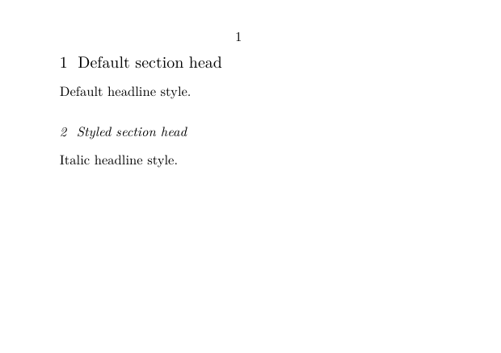
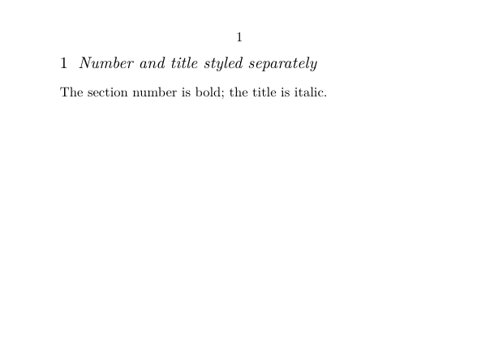
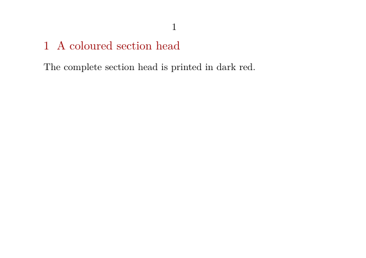
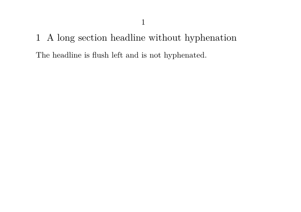
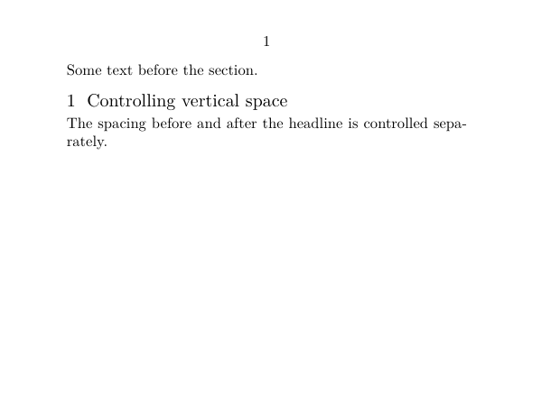
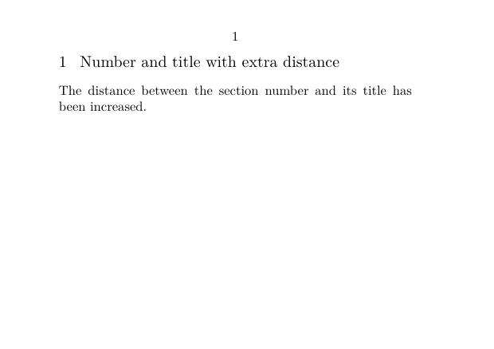
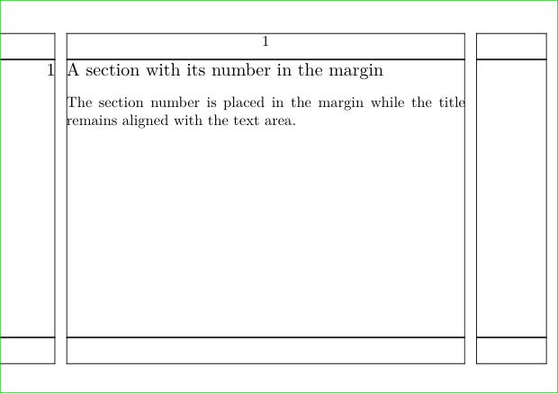
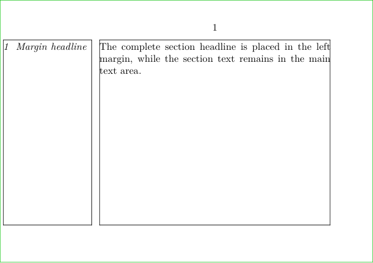

HOW-TO GUIDE
Use \setuphead to change how chapter, section, and subsection heads are presented: style, colour, alignment, spacing, placement, and page-breaking behaviour.
If you are learning document structure for the first time, start with Tutorials.
If you want to understand why structure and presentation are separate, read Understanding document structure and section heads.
Structure is not formatting
\setuphead changes the presentation of a structural head. It does not change whether the structural item is a chapter, section, subsection, or another level.
STRUCTURE PRESENTATION
section ────────────────────────► \setuphead[section]
│
├── style
├── colour
├── alignment
├── spacing
├── placement
└── page breaking
For numbering as a structural mechanism, see Section numbering.
Contents
- 1 1. What this page does
- 2 2. Change the style of a head
- 3 3. Style the number and title separately
- 4 4. Change the colour
- 5 5. Align a headline and control hyphenation
- 6 6. Control space before and after a head
- 7 7. Control the distance between number and title
- 8 8. Put the number in the margin
- 9 9. Put the whole headline in the margin
- 10 10. Start a head on a new page
- 11 11. Combine ordinary settings
- 12 12. Advanced headline transformations
- 13 13. Specialised chapter designs
- 14 14. Historical material
- 15 15. Related pages
1. What this page does
The basic pattern is:
\setuphead [section] [key=value]
The first argument selects the kind of head to configure. The second argument contains the settings.
For example:
\setuphead [section] [style=\it]
changes the presentation of section heads.
The examples below use section, but the same interface is also
used for other structural heads such as chapter and
subsection.
About the examples
The short examples use A7 landscape paper and an 8 pt body font so that the effect of each setting can be displayed compactly in the Garden.
The paper size is part of the demonstration only; it is not required by \setuphead.
2. Change the style of a head
Use style= to apply a style to the complete head — both the
number and the title.
-
\setuppapersize[A7,landscape] \setupbodyfont[8pt] \starttext \startsection [title={Default section head}] Default headline style. \stopsection \setuphead [section] [style=\it] \startsection [title={Styled section head}] Italic headline style. \stopsection \stoptext
-

The relationship is:
\setuphead[section][style=\it]
│
└── number + title
A font switch or another suitable style command can be used in the same position.
Start with the simplest setting
Use style= when the number and title should share the same
presentation. Use numberstyle= and textstyle= when
they should differ.
3. Style the number and title separately
The number and title can be styled independently:
numberstyle=... textstyle=...
For example:
-
\setuppapersize[A7,landscape] \setupbodyfont[8pt] \setuphead [section] [numberstyle=bold, textstyle=\it] \starttext \startsection [title={Number and title styled separately}] The section number is bold; the title is italic. \stopsection \stoptext
-

The distinction is:
SECTION HEAD
│
├── number ───► numberstyle=
│
└── title ───► textstyle=
The related settings numbercommand=,
textcommand=, deepnumbercommand=, and
deeptextcommand= are more powerful transformation interfaces.
They are discussed briefly in the advanced section below; they are not needed
for ordinary font styling.
4. Change the colour
Use color= to colour the complete head:
-
\setuppapersize[A7,landscape] \setupbodyfont[8pt] \setuphead [section] [color=darkred] \starttext \startsection [title={A coloured section head}] The complete section head is printed in dark red. \stopsection \stoptext
-

In this form, the colour applies to the number and title together.
color=darkred
│
└── number + title
5. Align a headline and control hyphenation
Headlines often need different line-breaking behaviour from ordinary body text.
Use align= to control alignment and related paragraph settings:
-
\setuppapersize[A7,landscape] \setupbodyfont[8pt] \setuphead [section] [align={flushleft,nothyphenated,verytolerant}] \starttext \startsection [title={A long section headline without hyphenation}] The headline is flush left and is not hyphenated. \stopsection \stoptext
-

The three settings in this example have distinct roles:
align={
flushleft, → align the head to the left
nothyphenated, → do not hyphenate the title
verytolerant → allow more flexible line breaking
}
Headline paragraphs are still paragraphs
A multi-line title has to be broken into lines. The align=
setting controls that paragraph behaviour without changing the structural
identity of the section.
6. Control space before and after a head
Use before= and after= to control what ConTeXt
inserts before and after the head.
-
\setuppapersize[A7,landscape] \setupbodyfont[8pt] \setuphead [section] [before=\blank[big], after=\blank[small]] \starttext Some text before the section. \startsection [title={Controlling vertical space}] The spacing before and after the headline is controlled separately. \stopsection \stoptext
-

The basic model is:
previous text
before=
SECTION HEAD
after=
following text
The values are commands, not merely dimensions. This makes it possible to use more elaborate material before or after a head, but a simple \blank is usually the clearest starting point.
Avoid mixing too many effects at once
A rule, colour change, font switch, and spacing command can all be combined in a head setup, but keeping them separate while designing the document makes problems easier to diagnose.
7. Control the distance between number and title
Use distance= to adjust the horizontal separation between the
number and title:
-
\setuppapersize[A7,landscape] \setupbodyfont[8pt] \setuphead [section] [distance=1em] \starttext \startsection [title={Number and title with extra distance}] The distance between the section number and its title has been increased. \stopsection \stoptext
-

Conceptually:
number ←── distance= ──→ title
This setting changes the space between the two visible components; it does not change the numbering itself.
8. Put the number in the margin
The alternative= setting changes the way the components of a
head are arranged.
With alternative=margin, the number is moved into the margin
while the title remains aligned with the text area:
-
\setuppapersize[A7,landscape] \setupbodyfont[8pt] \showframe \setuphead [section] [alternative=margin] \starttext \startsection [title={A section with its number in the margin}] The section number is placed in the margin while the title remains aligned with the text area. \stopsection \stoptext
-

The frame is displayed only to make the page areas visible.
LEFT MARGIN TEXT AREA
1 A section with its number in the margin
body text ...
Placement is different from styling
style=, color=, and related settings change the
appearance of the head. alternative= can change how its
components are arranged on the page.
9. Put the whole headline in the margin
For a complete margin headline, use alternative=margintext and
configure the corresponding margin data.
-
\setuppapersize[A7,landscape] \setupbodyfont[8pt] \setuplayout [leftmargin=2.5cm, backspace=2.8cm, width=6.5cm] \showframe[text][leftmargin,text] \setupmargindata [margintext:section] [align={flushleft,nothyphenated,verytolerant}] \setuphead [section] [alternative=margintext, style=\it] \starttext \startsection [title={Margin headline}] The complete section headline is placed in the left margin, while the section text remains in the main text area. \stopsection \stoptext
-

The two margin alternatives shown on this page should not be confused:
alternative=margin
LEFT MARGIN TEXT AREA
1 Section title
alternative=margintext
LEFT MARGIN TEXT AREA
1 Section title Section text ...
The available width of the margin is part of the page layout. If a margin headline is too narrow, adjust the layout rather than forcing the title into an unsuitable space.
10. Start a head on a new page
Use page=yes when a head should begin on a new page:
\setuppapersize[A7,landscape] \setupbodyfont[8pt] \setuphead [section] [page=yes] \starttext This text is on the first page. \startsection [title={A section starting on a new page}] The section head and its text start on the next page. \stopsection \stoptext
Compile this example locally
This example intentionally produces two pages, so its rendered result is not embedded in the Garden.
The first page contains the introductory sentence. The section head and its text begin on the second page.
The basic mechanism is:
\setuphead[section][page=yes]
│
└── force a page break before the head
This is the ordinary case. Opening chapters on recto pages in double-sided documents, while also controlling headers and footers on inserted blank pages, is a more specialised page-breaking problem.
Recto openings and intentionally blank pages
For a book design, page=yes may not be sufficient. A named rule
defined with \definepagebreak can be assigned to
page=..., for example to request a right-hand page and control
headers or footers.
That belongs to page-breaking and book-design workflows rather than to the basic headline-formatting path.
11. Combine ordinary settings
Once the individual mechanisms are clear, several settings can be combined in one setup.
For example:
\setuphead [section] [numberstyle=bold, textstyle=\it, color=darkred, align={flushleft,nothyphenated,verytolerant}, before=\blank[big], after=\blank[small], distance=1em]
The relationship remains:
\setuphead[section]
│
┌────────────────┼────────────────┐
│ │ │
style spacing placement
│ │ │
number/text before/after alternative/page
│
colour
A useful working method
Configure the structure first. Then change one aspect of the head at a time: style, spacing, alignment, placement, and page behaviour.
This makes a complex design much easier to maintain.
12. Advanced headline transformations
The settings above cover ordinary headline formatting. \setuphead can also hand the number or title to user-defined commands.
The most important interfaces are:
| Applies to | Style interface | Command interface | Deeper transformation interface |
|---|---|---|---|
| Title text | textstyle=
|
textcommand=
|
deeptextcommand=
|
| Number | numberstyle=
|
numbercommand=
|
deepnumbercommand=
|
| Whole head | style=
|
command=
|
— |
These command interfaces are useful when the number and title must be recomposed rather than merely styled.
12.1 Number and title on separate lines
A custom command can receive the visible number and title and compose them in a new arrangement.
The previous version of this page used this pattern:
\define[2]\MySection {\framed [frame=off, width=broad, align=flushleft] {#1\\#2}} \setuphead [section] [command=\MySection]
Here:
command=\MySection
│
├── #1 number
└── #2 title
│
▼
custom composition
This is a different level of customisation from style= or
distance=. Use it when the built-in alternatives do not express
the design you need.
12.2 Add a label to a custom head
A custom head command can also use language-dependent head text:
\setupheadtext [section=Section] \define[2]\MySection {\framed [frame=off] {\headtext{section}\space #1\blank #2}} \setuphead [section] [command=\MySection]
This pattern is useful when a design explicitly prints a word such as “Section” or “Chapter”.
12.3 Hide the printed head but keep structural data
The former version of this page also documented a specialised workflow using:
\setuphead [section] [placehead=hidden]
together with \placerawheaddata when the structural information must be used elsewhere on the page.
Specialised technique
Hiding the normal head while reusing its data elsewhere interacts with lists, markings, page areas, and the exact point at which structural data is flushed.
Treat this as a specialised workflow, not as the normal way to suppress a visible heading. Test the complete document, including the table of contents and running heads.
13. Specialised chapter designs
A chapter opening can become a complete page design rather than an ordinary headline.
Examples may combine:
-
a custom
command=; - \framed or framed text;
- overlays;
- MetaPost graphics;
- page backgrounds;
- structure user variables;
- fixed or conditional vertical positioning.
The data flow is still the same:
STRUCTURAL CHAPTER
│
├── number
├── title
├── list entry
├── bookmark
└── reference target
│
▼
custom head command
│
├── frame
├── graphic
├── background
└── page design
│
▼
printed page
Keep structural metadata intact
A visually elaborate chapter opening should still behave as a chapter in the document structure, table of contents, references, bookmarks, and markings.
A custom page design should change presentation, not destroy structural information.
The former version of this page included recipes for:
- an enlarged shadow behind a chapter title;
- replacing a title and number with an image;
- a MetaPost-decorated chapter head;
- chapter pages with special backgrounds;
- fixed positioning of the text following a chapter head;
- a rule extending to the width of the last line of a multi-line head.
These are valuable examples of advanced composition, but they are too specialised to form part of the main how-to path. They should be treated as material for a dedicated guide on specialised chapter pages.
14. Historical material
HISTORICAL MATERIAL
The previous version of this page accumulated solutions from different generations of ConTeXt. Some are useful as examples of technique or as documentation history, but they should not automatically be copied into a current LMTX document.
In particular, examples explicitly written for MkII or early MkIV should be rechecked against current LMTX before being recommended as present-day practice.
The historical material included:
| Period | Technique | Status on this page |
|---|---|---|
| 2003 | Margin headline implemented with a custom \inmargin command
|
Superseded in the main path by alternative=margintext
|
| 2004 | Enlarged shadow behind a chapter headline | Preserved conceptually as an advanced custom-head example |
| 2005 | MkII workaround involving deeptextcommand and deepnumbercommand
|
Historical; not presented as LMTX guidance |
| 2010 | MkIV workaround involving the current head number | Historical; not presented as LMTX guidance |
The original discussions referenced by the former page include:
- margin headline discussion (2003)
- enlarged-shadow solution (2004)
- MkII image-head discussion (2005)
- MkIV follow-up (2010)
Earlier versions of the Garden page remain available through the page history.
15. Related pages
Choose the next page according to the task
- To build a structured document step by step, see Tutorials .
- To understand the conceptual model, see Understanding document structure and section heads .
- To change numbering, see Section numbering .
- To configure contents, see Table of contents .
- For command-level options, see \setuphead .
Keep the four questions separate
What is the structural division? How is it numbered? How is it represented in lists, bookmarks, markings, and references? How should its head look?
Headline formatting answers the last question.